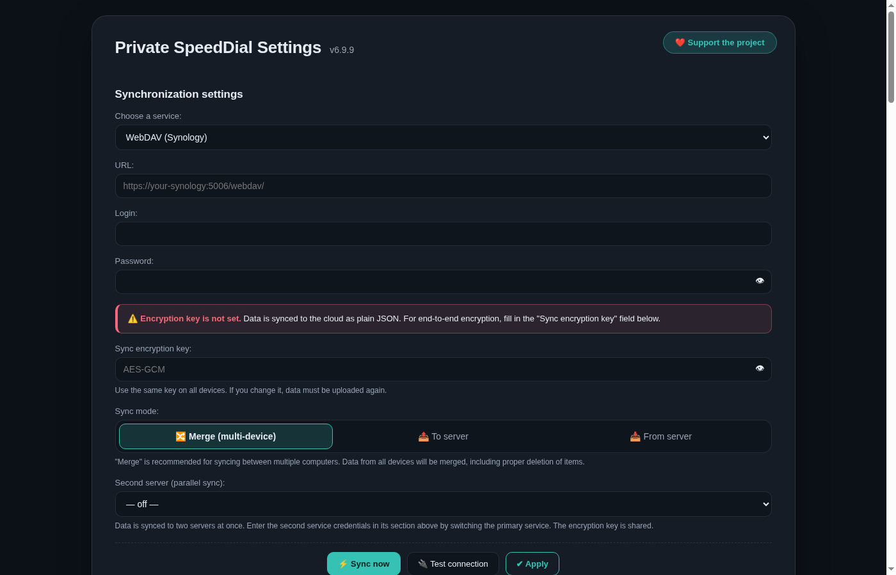

AES-256-GCM · PBKDF2 ×310 000
WebDAV · Synology · Nextcloud
Яндекс Диск
Облако Mail.ru
Dropbox
Box
OneDrive
pCloud


CtrlShiftY
CtrlShiftS
CtrlShiftF
Мобильное приложение
Private SpeedDial — это два приложения с общим форматом данных: расширение Chrome и приложение для Android. Закладки и заметки, добавленные на телефоне, появляются на компьютере — и наоборот. Синхронизация идёт через ваш WebDAV, Nextcloud или облако, которое вы укажете сами; общего сервера проекта нет.
- один файл
private-speeddial.jsonдля обеих платформ; - шифрование AES-256-GCM с ключом, который задаёте вы;
- Android 8.0+, системная тема, поиск в меню ☰ и плитки в быстром доступе;
- на телефоне синхронизация работает, пока приложение открыто.
Private SpeedDial is a pair of apps sharing one data format: a Chrome extension and an Android app. Point both at your own WebDAV or cloud folder to keep bookmarks and notes in sync.